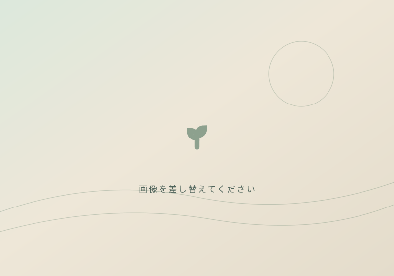

～ {{所在地}}
{{2〜3文の要約。何の店で、誰に、何を約束するか}}
{{出典や資格の一言}} ▣ {{出典名}} ↗

イメージイラスト実際の{{対象}}ではありません
{{2文程度}}
01 / {{英字ラベル}}
{{2〜3文}}
{{説明}}
02 / {{英字ラベル}}
03 / FACTS & ACCESS
{{注意書き。表記差があるなら正直に書く}}
照合した主な情報源
ACCESS
{{補足}}
04 / {{英字ラベル}}
{{2文}}
{{免責・出典方針の一文}}
CONTACT
{{受付時間などの補足}}